Killjoy
БИОГРАФИЯ
Гений из Германии. Killjoy легко защищает территорию на поле боя с помощью своего арсенала изобретений. Если противника не остановит урон от ее устройств, то наносимые ими эффекты ослабления помогут Killjoy легко с ним справиться.
Ability

Q – "ТРЕВОГОБОТ" - Выбирает замаскированного тревогобота. Нажмите кнопку ОГОНЬ, чтобы выпустить бота, который атакует противников, оказавшихся в его радиусе действия. Достигнув цели, бот взрывается, нанося урон и делая противников уязвимыми. УДЕРЖИВАЙТЕ кнопку умения, чтобы отозвать бота.
E – "ТУРЕЛЬ" - Выбирает турель. Нажмите кнопку ОГОНЬ, чтобы установить турель, которая автоматически отслеживает противников в 180-градусном секторе. УДЕРЖИВАЙТЕ кнопку умения, чтобы отозвать турель.
C – "УЛЕЙ" - Выбирает гранату "Улей". Нажмите кнопку ОГОНЬ, чтобы бросить гранату. После приземления граната маскируется. АКТИВИРУЙТЕ "Улей", чтобы выпустить рой наносящих урон наноботов.
X – "БЛОКИРОВКА" - Выбирает генератор поля блокировки. Нажмите кнопку ОГОНЬ, чтобы установить генератор. Задерживает всех противников, находящихся в радиусе действия. Противники могут вывести генератор из строя.